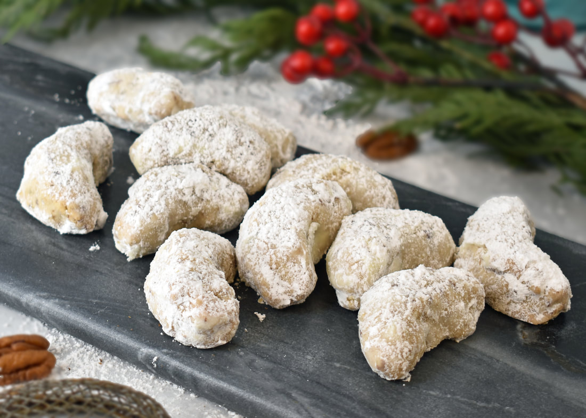

Pecan Cresecents

Description
A spin on classic shortbread, a crumbly holiday cookie with a toasted nut taste. You won't just one!
Ingredients
- 4 cups of all purpose flour
- 1/4 tsp fine salt
- 2 cups unsalted butter, at room temp
- 2/3 cup granulated sugar
- 4 tsp vanilla extract
- 1 cup pecans, finely chopped
- 1 cup powdered sugar
- 2 tbsp bourbon or brandy
Instructions
- Pre-heat oven to 325 degrees F. Line two baking sheets with parchment paper.
- Whisk flour and salt together in a large bowl and set aside.
- Throw pecans into a food processer or blender until finely ground, careful not to over blend into a paste.
- Combine butter and granulated sugar in a separate large bowl and beat with an electric mixer on medium-high until light and fluffy, about 3-4 mins.
- Beat in 2 tsp of water, the vanilla and the bourbon. Slowly mix in flour mixture and finally, the pecans.
- Take tablespoon size pieces of dough,roll each to form a crescent shape and arrange evenly spaced on prepared baking sheets.
- Bake until slightly golden on edges and bottom, 10-12 mins. Watch very carefully, better to undercook than overcook. Let cookies cool on baking sheets for a few minutes then transfer to a wire rack to cool completely, about 10 mins. Repeat with remaining dough.
- Put powdered sugar into a seive. Once cookies are cooled, dust with sugar. Enjoy! :)